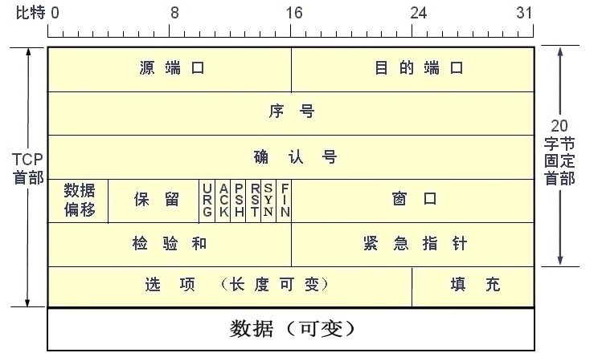
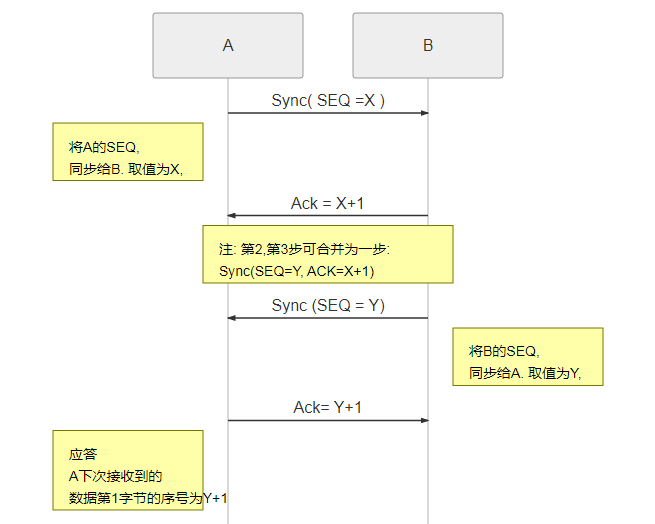
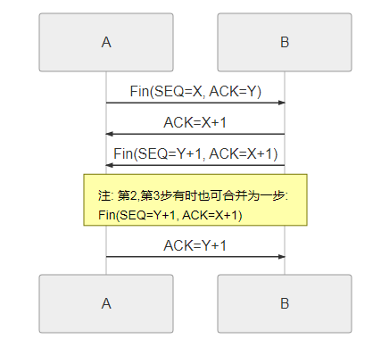
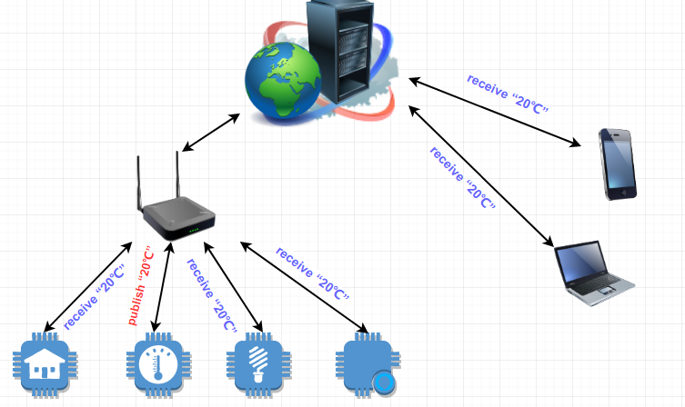

第三章 硬件平台程序设计
第三章 硬件平台程序设计
3.1 通信协议确立
常见的通信协议有TCP、UDP、MQTT、HTTP协议等，硬件层协议要与后端服务器匹配才能完成通信。硬件层协议要充分考虑单片机运行速度，以及内存大小，选择合适的通信协议有利用提高系统稳定性，保障数据传输的安全性，减少传输过程中出错概率。
3.1.1 TCP协议
TCP协议全称: TCP(Transmission Control Protocol 传输控制协议)是一种面向连接的、可靠的、基于字节流的传输层通信协议。传输控制协议,就是要对数据的传输进行控制.
TCP协议主要任务是建立应用程序之间信息通信。应用程序要想建立通信，首先其中一方会主动发送一个请求，申请建立通信，这个请求会被发送到接收方对应的IP地址。当接收方收到请求后双方会执行“握手”流程，确保双方通信稳定、安全的建立。TCP通信建立后，两个应用程序可以实现全双工的信息交流。

端口号：计算机上可以运行很多TCP应用程序，同一台计算机上运行的所有TCP应用程序它们的IP地址是相同的，那么，如何区分这些应用程序？如何保证数据能被指定的应用程序接收，端口号的作用就体现出来了。同一台计算机上所有的TCP应用程序，它们都有着自己唯一的端口号，端口号类似与通道号，TCP应用程序通过IP地址+端口号，可以与同一计算机上不同的TCP应用程序通信，也可以与不同计算机上的TCP应用程序通信。
序号：使用TCP协议进行数据通信时，如若发送数据量大，TCP会将报文分段发送，但是在数据传输过程中，受网络状况，干扰信号的影响。即使发送端按找严格的时间顺序进行报文段的发送，但接收端往往接收到的数据顺序并非与发送端发送顺序一致。因此，序号的作用是在多段数据发送时，用了区分数据段的先后顺序，使得技术数据到达目标主机时的顺序不同，目标主机也能通过序号对数据进行处理，得到与发送端一模一样的数据。那么，为什么TCP协议要对大数据量分段发送呢？首先要明白，数据在传输过程中，难免因网络环境，传输线路的外部干扰，造成数据出错、丢失，所以接收端每收到一组数据都会对其校验，倘若传输过程数据出错，就会触发数据重传。数据量多大，单次传输很浪费时间，如果发送数据错误，哪怕是只有一个字节，那么重新传输又得重头开始传，导致出错时重传很是浪费时间。分段传输，出错只会重传出错的数据段，能很好的减少出错重传时时间的浪费。
确认号：用于确认有多少数据段被目标主机接收，确认号等于按照顺序接收到的最后一个数据段的序号加1。
数据偏移：从TCP报文格式中可以得知，首部含有可选项，可选项将会导致TCP首部的长度发送变化。数据偏移是指TCP报文的数据段，距离TCP报文起始地址的距离，也就是TCP首部的长度。数据偏移占用4bit，也就是最大值为“1111”，所以首部最大占用60字节（即15*32/8）。
保留位：暂时保留，无具体功能，可以忽略，占用6bit，默认全部置“0”。
URG(紧急)：为“1”时有效，用于开启、关闭紧急指针功能。
ACK（确认）：为“1”时，使能确认号字段。
PSH(推送)：置为“1”时，启动TCP推送功能，在目的主机接收端PSH为1的报文是，会尽快的推送给应用程序，而不是放在缓存中等待缓存填满后向上交付。
RST(复位)：用于复位当前TCP连接。
SYN（同步）：用于TCP“三次握手”建立连接时有效。SYN为“1”，ACK为“0”，则表明该字段为请求段。
FIN（完成）：当数据传输完成时FIN置为“1”，表示数据传输完成，用于释放当前连接。
窗口：用来告知发送端，接受端缓存的大小，从而控制发送端发送的速率。
校验和：用于校验整个TCP报文，判断传输过程是否出错。
紧急指针：指向紧急数据最后字节的序号。
选项：包括“时间戳”，“窗口扩大因子”等选项。最大长度40字节。
数据：TCP传输数据存放的位置，可选字段，无数据发送可为空。
应用程序使用TCP协议与服务器建立连接时，会执行“三次握手”流程，当三次握手成功后才能正常的传输数据。那么，何为“三次握手”？其实三次握手，可以理解为应用程序与TCP服务器进行的三次对话。应用程序与TCP服务器通信，那么应用程序就是客户端，TCP服务器就是服务端。客户端要想与服务器建立通信，首先客户端要向服务器发送建立连接请求，此为第一次“握手”。服务器收到客户端的建立连接请求后，会向客户端发送应答信号，表示收到连接请求，此为第二次“握手”。当客户端收到服务器应答信号后，会返回响应信号，告诉服务器已经收到数据，此为第三次“握手”。在完成三次握手后，客户端与服务器才执行正常数据通信。

客户端与服务器传输数据结束后，要执行断开连接的动作，此时，会执行“四次挥手”来断开当前的连接。具体过程如下：当客户端发送完数据后，会主动发送释放连接的报文，此为第一次“挥手”。当服务器收到客户端释放连接的报文后，会给客户端返回一个确认报文，此时客户端收到确认报文后，会进入等待终止的状态。等待服务端的释放连接的报文。此过程中服务端向客户端发送确认报文为第二次“挥手”。这是服务器主动向客户端发送释放连接的报文，并等待客户端的最后确认报文,此为第三次“挥手”。当客户端收到服务器的释放连接报文后，返回给服务器确认报文，此为第四次“挥手”。服务器在收到最后确认报文后会关闭连接。

3.1.2MQTT协议
MQTT(Message Queuing Telemetry Transport，消息队列遥测传输)是IBM开发的一个即时通讯协议。MQTT协议客户端与服务器通信是通过消息订阅，消息发布来完成，MQTT不论是客户端还是服务器都可以发布或订阅主题。发布主题时，所有订阅该主题的客户端都可以收到消息。客户端也可以订阅多个主题，这个过程类似与微信或者QQ的群聊，订阅主题就像加入到了群聊中，每个客户端发布的消息都会被共享。这种方式很时候物联网应用，只需发布一条消息，所有订阅的设备就能收到消息，并执行各自的处理过程，实现联动控制，设备集群的控制，解决了物联网多传感器控制流程繁琐的难题。

如上图所示，智能家居硬件设备采用MQTT协议进行组网通信，假定温度对应的主题为 “temperature”，除了测温设备外，所有设备都订阅了“temperature”主题，测温设备检测到室温为20摄氏度，向MQTT网络发布了“temperature：20℃”，则所有订阅“tempera- ture”主题的设备都会收到这条消息。当然若是测温设备也订阅了“temperature”主题,其自身也会收到消息。在实际应用场合中，一个智能家居控制设备，往往会关注一个或多个环境参数，这些参数的检测设备可能处于同一空间不同位置，也可能处于不同空间。比如窗帘控制设备，它需要知道室内室外的光照强度，用来判断白天黑夜，根据光强控制窗帘遮光面积。室内的检测设备和室外的并不是同一区域，要想实现数据交互，按照TCP、http或者UDP的做法，一般检测设备会与服务器连接，上传环境数据，服务器将环境数据存入数据库，当控制设备要根据环境数据来执行控制动作时，会向服务器发起查询请求，服务器通过查询数据库，将数据库内对于的数据发送给控制设备，这其实是个很耗时的过程。这时候MQTT的优点就提现出来了。用MQTT协议，检测设备发布的环境数据直接就转给了所有订阅相同主题的设备，数据存储，服务器后台就可以轻松完成。省去了控制设备获取环境数据时，服务器每次都去查询数据库的过程。且不说网络环境是否稳定，就算是响应最快的设备，网络传输也要耗费一定时间，要知道物联网控制设备，最敏感的问题就是控制延时，这是不可避免的，但是可以优化。